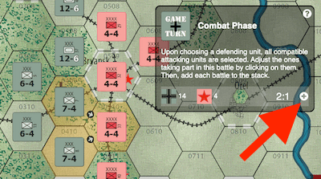
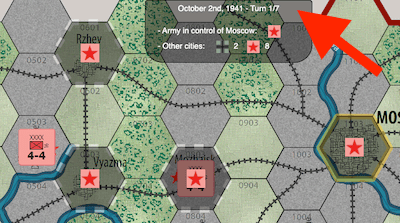

Sequence of Play
Here is a summary of the procedure of each game turn embedded in this implementation of Battle for Moscow. For more details on this and other base characteristics of the game, please consult the rules.
German Player Turn
- German Replacement Phase: the Germans receive replacements (except during turn 1).
- German (Special) Panzer Movement Phase: all German armor/panzer units may move.
- German Combat Phase: all German units may attack.
- German Movement Phase: all German units may move (including panzers that moved in Phase 2).
Russian Player Turn
- Russian Replacement Phase: the Russians receive replacements (plus 1 reinforcement during turn 4).
- Russian (Special) Rail Movement Phase: all Russian units that begin this Phase on a rail line may move along it.
- Russian Combat Phase: all Russian units may attack.
- Russian Movement Phase: all Russian units may move (including those that moved by rail in Phase 6).
How To...
... Add Battles

When entering a combat phase, start clicking on defending units that you wish to attack.
For each of them, all available attacking units are highlighted and the corresponding battle odds are automatically calculated and displayed on the dashboard.
Click on the sign to add this battle to the list that will be resolved during the next step, and proceed to selecting the next battles of this turn if any.
... View Cities' Control

Who's controlling cities at the end of the game is a key victory condition: the Germans win if they control Moscow at the end of Game Turn 7. The Russians win if they control Moscow and any one other city. Any other result (i.e., the Germans control every city but Moscow) is a draw.
Each city's control is with the army whose units were the last ones to have entered that city.
In order to assess which city is under which army's control at any point throughout the game, simply click on the turn information bar to open a summary and highlight the cities' current status on the map. Then, click again on the turn information to close the view.
Terrain Effects Chart

Combat Results Table